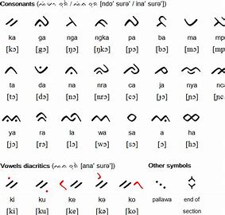
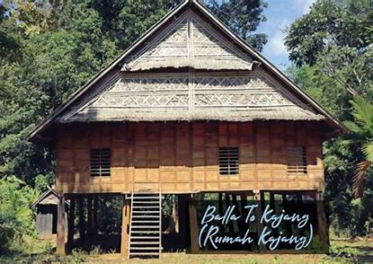

Seni Dan Budaya
Kompleks Makam Dea Dg. Lita
Deskripsi lengkap tentang makam ini. Berisi informasi sejarah dan karakteristiknya. Read More
Makam Parakkasi dg Maloga
Deskripsi lengkap tentang makam ini. Berisi informasi sejarah dan karakteristiknya. Read More
Kompleks Makam Datuk Tiro
Deskripsi lengkap tentang makam ini. Berisi informasi sejarah dan karakteristiknya. Read More

Kompleks Makam Petta Matinroe Ri Tasi’na
Deskripsi lengkap kompleks makam ini dan sejarah tokoh Petta Matinroe Ri Tasi’na. Read More

Bahasa Daerah di Kab. Bulukumba
Deskripsi lengkap tentang bahasa dan dialek di Kabupaten Bulukumba. Read More

